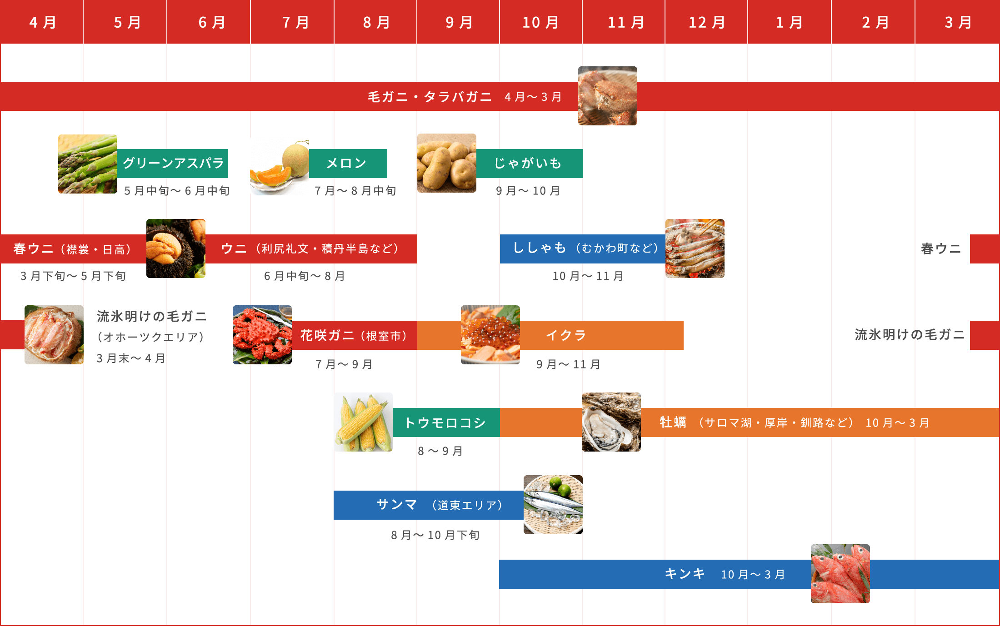

海鮮
🦪 グルメカレンダー
北海道といえば海鮮！何から食べるか迷ってしまうあなたへ、おすすめの海の幸をご紹介します。
道南エリア

1月〜4月... 6：00〜14：00過ぎ
5月〜12月... 5：00〜14：00過ぎ（店舗毎に異なる）
駐車場あり
函館朝市 おすすめ！
JR函館駅から徒歩1分。約250店舗もの店舗が集まる函館朝市。
自分で釣ったイカをその場で食べられる人気の活イカ釣りをはじめ、
特産物のイカやホタテ、カニ・サケといった鮮度の高い食材が集まる市場です。
※道南、道央に店舗あり
本部：北海道函館市中道2-52-1 函太郎美原店2F
📞 0138-32-3905
グルメ回転ずし 函太郎
函館近海や北海道のネタを中心とした寿司を味わうことができます。
定番のネタをはじめ、北海道ならではのおいしい寿司が楽しめます。
人気の理由は、回転寿司とは思えないクオリティの高さと大きなネタ！
道央エリア
旬：10月～11月
カネダイ大野商店
北海道勇払郡むかわ町美幸２丁目４２
📞 0145-42-2468
本物のししゃも (むかわ町)
「いつも食べている"ししゃも"は"ししゃも"じゃない」という話を聞いたこと
はありますか。一般に食べられているのはカペリンという代用魚。
世界中でも北海道の太平洋岸でしか獲れない貴重な魚です。
※道央、道北、道東に店舗あり
回転寿し トリトン おすすめ！
人気回転寿司チェーンの店舗のひとつ。トリトンでは、“おいしさへの追求”
をこだわりとしており、目利きのプロが毎朝市場で仕入れ、各店舗まで直送。
鮮度、ネタの大きさ、握り、たれ、食感。追求した味わいが楽しめます。
道北エリア
旬：6月中旬～8月
利尻島・礼文島産のうに おすすめ！
ここで獲れるうにがおいしい理由は、うにの主食である昆布のおかげ。
利尻・礼文と言えば、高級昆布の代名詞としても知られる「利尻昆布」の産地。
この地域のうには、この旨味の強い高級昆布を食べて育っているんです。
その贅沢なうにの味わいは"まるでフルーツみたい"と表現されることも。

北海道苫前郡羽幌町北３条１丁目２９−２９
📞 0164-62-3800
11:30～14:30（L.O.14:00）/17:30～20:30（L.O.20:00）
海鮮レストラン二島物語 (羽幌町)
日本海に面した羽幌町は、甘えびの漁獲量が日本一。
羽幌町の温泉旅館「はぼろ温泉サンセットプラザ」内のレストラン「二島物語」
であっさり塩味のスープに甘エビのかき揚げとエビとタコの餃子がのった、
「羽幌エビの塩ラーメン」は如何でしょうか。
道東エリア
旬：12月〜2月
※ あっけし牡蠣まつり
入場無料
駐車場あり
牡蠣 (厚岸) おすすめ！
国内で唯一、一年中新鮮な美味しい牡蠣が食べられることで有名な厚岸ですが、
秋から冬にかけては特にまるまると太った牡蠣を味わうことができます。
10月上旬に開催される「あっけし牡蠣まつり」は、毎年2万人以上訪れます。
旬：3月下旬
海明けの毛ガニ
1月から3月まで海全体が流氷に覆われる間、氷の下の毛ガニは"極上の毛ガニ"
へと成長します。おいしくなる理由は、流氷と一緒に運ばれてくる栄養豊富な
プランクトン。引き締まったたっぷりの身と、濃厚な味噌が極上の味わいです。
※道央、道東に店舗あり
なごやか亭 おすすめ！
「どこよりも大きく！どこよりも美味しく！すべてはお客様の満足のために！」
をモットーに、産地直送の新鮮なネタを提供。釧路市を拠点に展開しています。
リーズナブルな価格ながら、コンセプト通りの大きなネタで人気です。
※道南、道央、道東に店舗あり
札幌本部：北海道札幌市西区西野2条2丁目4-3
回転寿司 根室はなまる
美味しい食事は味だけでなく笑顔も大切という考えから、活気あふれる明るい
雰囲気の中で食事を楽しめます。また行きたくなる店づくりをしており、
鮮度・雰囲気のほか、メニューの豊富さも魅力です。